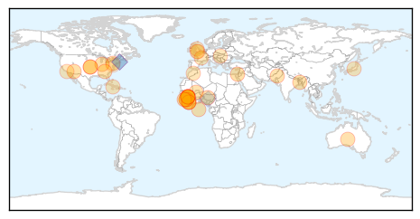
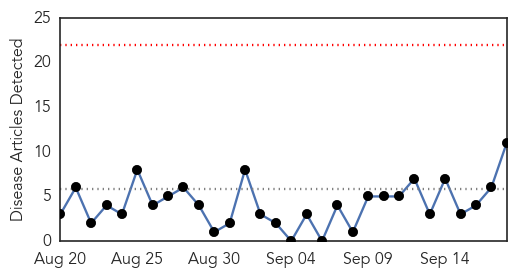
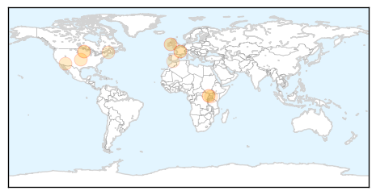

Ebola
30-Day Web Trend
0 alerts, 0 warnings

30-Day Twitter Trend
0 alerts, 0 warnings

Article Locations
Article Confidences

Top Articles:
- 1.000
- Amid institutional Ebola blunders, Georgia did everything right
- 1.000
- Latest News on Ebola and Infectious Diseases
- 0.999
- Monitoring Ends for Travelers from Liberia for Ebola
- 0.998
- West African health infrastructure gets United States support
- 0.995
- First Italian with Ebola takes trial drug
- 0.995
- ‘America’s Nobel’ Goes To Doctors Without Borders « Israel Grossman Article.Org
- 0.994
- Travelers from Liberia No Longer Screened for Ebola
- 0.992
- Doctors Without Borders Has Mixed Feelings About Award For Ebola Work
- 0.990
- More Needs to Be Done in Fighting Malaria, CDC Chief Says
- 0.990
- Airport screening to end for travelers from Liberia to U.S.
- 0.988
- Study shows fear and stigma are major factors that contribute to spread of AIDS, Ebola
- 0.985
- People worked to tackle Ebola marched to UK parliament in honour
- 0.981
- How can Sierra Leone's health sector recover from Ebola?
- 0.977
- Lassa fever's York County victim: Much work remains for Lassa, Ebola researchers
- 0.976
- Breaking News and Opinion Mareeg.com
- 0.974
- We are still learning the full extent of the ebola catastrophe
- 0.968
- Ebola response leaves stronger health networks, experts say
- 0.962
- Lassa fever took its first U.S. victim in York County 46 years ago. Here is the family's untold story
- 0.953
- Legislature delays update on health law
- 0.943
- Australian Healthcare Workers Stuck In West Africa In Case They Contract Ebola
- 0.942
- Polio resurfaces in Mali from Ebola-hit Guinea - WHO
- 0.930
- NEWS ON AIR : News On AIR brings the Latest & Top Breaking News on Politics, G-20 summit, Cricket, Sports, Business , State,Formula One in INDIA , Regional Language Audio Bulletins , Regional Language
- 0.915
- Ebola: Entry screening for travelers entering the United States from Liberia to end Monday
- 0.895
- Pride of Reading awards: Ebola nurse up for Healthcare award
- 0.875
- Survivors and physicians share experiences of 2014 Nigerian Ebola outbreak
- 0.867
- Trials to show if ZMapp, Ebola vaccines work to start soon in West Africa
- 0.820
- Cuban health care draws worldwide praise peoplesworld
- 0.819
- Brawl in Japanese parliament over controversial security bill
- 0.808
- Arrested French jihadist ‘instructed’ to attack concert
- 0.808
- Deposed interim president under house arrest in Burkina Faso
- 0.793
- French PM urges Hungary to treat migrants ‘humanely’
- 0.788
- 93 Days in Nollywood, Articles
- 0.744
- Fund launched to seek cures for African diseases
- 0.618
- Trial Ebola drug takes step closer to market
- 0.562
- Osborne unveils £350m health labs investment
- 0.525
- Ebola protective suit honored in global design competition
Top Tweets:
- 0.980
- Ebola Virus Mutations May Help It Evade Drug Treatment - Science 2.0 http://t.co/BGvEFG8I3H ebola EVD
- 0.926
- RT: Just reached 1500 Ebola virus genomes from many collaborators spanning epidemic. Firing up BEAST on quad Tesla K40 G…
- 0.925
- In Sierra Leone, Giving the Stigma of Ebola a Good, Swift Kick - New York Times http://t.co/LBgYi0JoyK ebola EVD
- 0.881
- Ebola contributed to tourism decline – Ramawela - Citizen http://t.co/R2AJ0axLlE ebola EVD
- 0.865
- Confusion and fear of Ebola delayed treatment for some kids - Fox News http://t.co/14jb6WHk7B ebola EVD
- 0.813
- Ebola Virus Mutations May Help It Evade Drug Treatment - Science 2.0 http://t.co/MnkmGrI2qY
- 0.773
- While Guinea celebrates an Ebola-free week, 5 cases flare up in Sierra Leone via http://t.co/5jpGRIMOEK
- 0.770
- Pride of Reading awards: Ebola nurse up for Healthcare award - getreading http://t.co/vjmlJHSNzf ebola EVD
- 0.757
- Doctor who survived Ebola to speak at Mars Hill - Times Daily http://t.co/6EGvHpzarV ebola EVD
- 0.727
- Ebola lesson 1:Every country needs core set of public health capacities to find, stop, prevent health threats when they emerge EyesonAfrica
- 0.697
- Situation report: @WHO provides the latest data around the Ebola epidemic http://t.co/TPuNaWv53M
- 0.664
- The US will stop Ebola entry screening for travelers from Liberia as of Monday. Hope Guinea & Sierra Leone can get there soon.
- 0.662
- Ebola Recedes in Guinea, as Sierra Leone Counts New Cases. This and more news in our Weekly Executive Summary: http://t.co/uLVsKMlr6H
- 0.662
- Coincident polio and Ebola crises expose similar fault lines in the current ... - Médecins Sans Fr... http://t.co/bmNiMZh47k ebola EVD
- 0.643
- 18 Sept - news pouch on avianflu avianinfluenza Ebola EbolaResponse MERS is here: http://t.co/HbhXfVt12Y
- 0.638
- Ebola lesson 2: When nat’l capacities are overwhelmed, world must move immediately to combat emerging health threats. EyesonAfrica
- 0.573
- In Sierra Leone, Giving the Stigma of Ebola a Good, Swift Kick - New York Times http://t.co/4hWcSFIIKr
- 0.563
- RT: Nigeria showed what could happen in response to Ebola crisis, effective and rapid use of health infrastructure - @DrFrie…
Meningitis
30-Day Web Trend
0 alerts, 0 warnings

30-Day Twitter Trend
0 alerts, 0 warnings

Article Locations
Article Confidences

Top Articles:
- 0.981
- Health officials investigating Salmonella cases linked to Chipotle restaurants in Minnesota
- 0.958
- Meningitis case confirmed, student seeking treatment
- 0.950
- DRC: More than 500 people fall victim to drug poisoning in the Ariwara region, Ituri
- 0.943
- DRC: More than 500 people fall victim to drug poisoning in the Ariwara region, Ituri - Democratic Republic of the Congo
- 0.914
- Laois Nationalist — Brush with death provokes Laois woman to seek free meningitis vaccine for kids
- 0.843
- A Listeriosis Outbreak, A Cheese Recall, Little Info
- 0.687
- Roger Daltrey struck down by meningitis forcing The Who to scrap entire tour Roger Daltrey struck down by meningitis forcing The Who to scrap entire tour
- 0.648
- Mother fights for Meningitis B vaccine - Story
- 0.601
- Maine epidemiologist recommends good hygiene to stop viral meningitis
- 0.523
- Government of Gibraltar Press Release
- 0.505
- Drug resistance on the rise as bacterial infections rampage
Top Tweets:
-
No tweets found for Sep 18, 2015